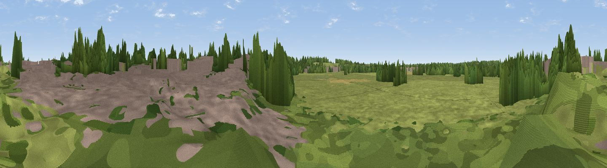

Viewpoint near Bungay
#46163 in England · top 94% of its area beats it · near BungayThe view, rendered

A 360° render of this exact spot computed from the terrain model, tree cover and land cover — summer colours, afternoon light, calibrated against photographs of famous viewpoints. Real trees, hedges and buildings will differ in detail.
The panorama
Grey silhouette: terrain skyline in each direction (720 bearings, Earth curvature and refraction included). Dashed green: skyline with trees (+15 m) and buildings (+8 m) as obstacles. Blue strip: how far the ground is visible on each bearing.
Where the view opens
Wedge length = distance to the farthest visible ground on that bearing (vegetation-aware). Rings at 10, 25 and 50 km.
What fills the view
66% grassland · 21% woodland · 8% built-up · 5% cropland
Angular shares of the visible panorama (visual magnitude), not map area. Landscape diversity 0.42 (0–1 Shannon).
Key numbers
More beautiful places nearby
The staircase of upgrades: each row has a higher view potential than everything closer. Driving times are estimates from straight-line distance, calibrated against real road routing — check an actual route before setting out.
| Place | Direction | Drive | Score |
|---|---|---|---|
| Poringland Heath | NNW · 15 km | ~27 min | 29.6 |
| Strumpshaw Hill | N · 18 km | ~31 min | 34.5 |
| Telescope | SE · 22 km | ~36 min | 35.0 |
| Gun Hill | SE · 22 km | ~37 min | 46.7 |
| Viewpoint near Paston | N · 46 km | ~66 min | 56.1 |
| Viewpoint near Mundesley | N · 47 km | ~67 min | 58.9 |
| Viewpoint near Trimingham | N · 49 km | ~70 min | 62.4 |
| Viewpoint near Sidestrand | N · 51 km | ~72 min | 65.3 |
52.45414, 1.43589 · source: osm viewpoint · position refined by local search. Computed location — check access rights before visiting.